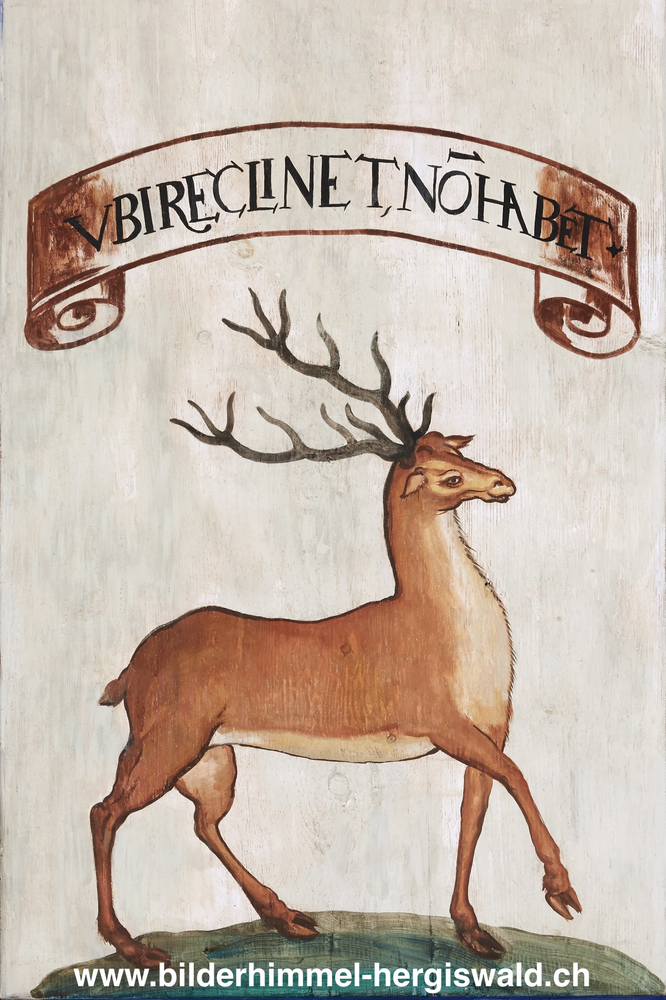

Süd 51 – Der Hirsch

Motto: UBI RECLINET, NON HABET.
Übersetzung: Er hat nichts, wo er [sein Haupt] hinlegen kann.
Erklärung:
Dem Hirsch schrieb die Überlieferung zu, Gewässer in einer Reihe zu durchschwimmen und sich dabei auf das Tier vor ihm zu stützen. Nur der vorderste Hirsch bleibt ohne Halt. Ist er erschöpft, wechselt er ans Ende der Reihe, und ein anderer übernimmt die Führung.
Dieses Bild wurde in älteren Quellen auf Christus bezogen. Wie der führende Hirsch keinen Ort hat, an dem er den Kopf ablegen kann, verweist auch das Motto UBI RECLINET, NON HABET auf Armut und Entbehrung.
In Hergiswald erscheint der Hirsch jedoch nicht als Teil einer Gruppe, sondern allein. Diese Reduktion ist bewusst gewählt. Hier steht das Tier für Maria. Es verweist auf ihr einfaches, entbehrungsreiches Leben und auf ihre Nähe zum Leiden Christi.